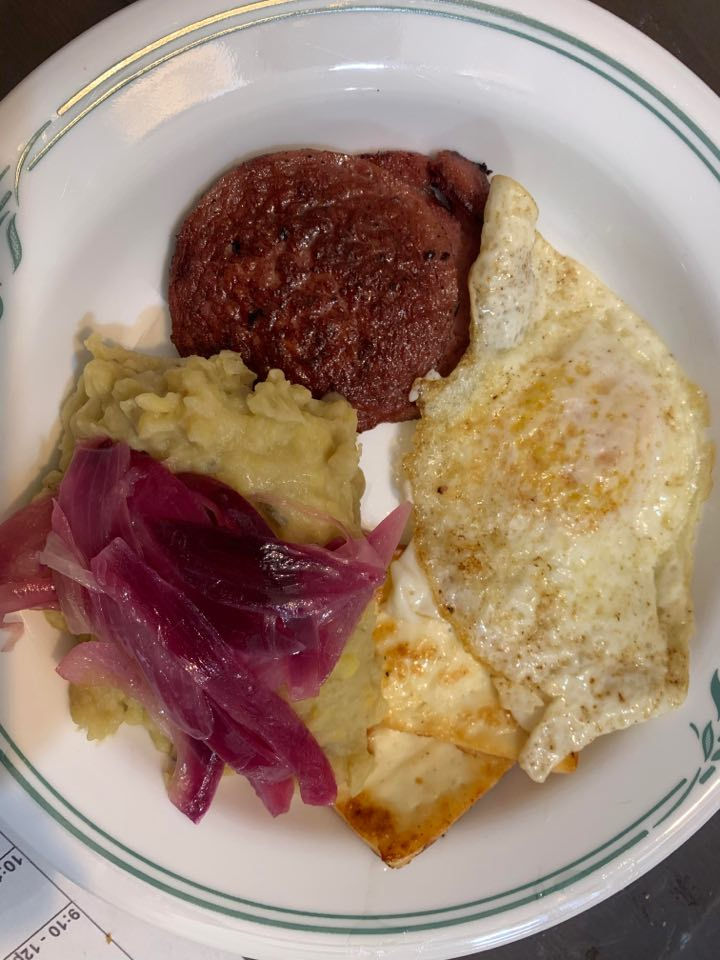

Mangú Con Los Tres Golpes

Ingredients:
Mangú:
- 4 Green plantains
- 1 1/2 tsp Salt
- 1 cup Water
- 4 tsp Olive oil
Quick Pickled Onions:
- 2 Red Onions, sliced
- 1 tbsp Olive oil
- 1 tbsp Red wine vinegar
- Salt
Other Ingredients:
- Queso de Freir, sliced
- Salami, sliced
- Eggs
- Oil for frying
Instructions:
Mangú
- Peel the plantains. Cut each lengthwise and then in half.
- In a pot, cover plantains with water. Boil until very tender. Add salt right before the water just starts to really bubble.
- Once tender, drain the plantains and mash until smooth.
- Add in the water and olive oil and mix until thoroughly incorporated.
Quick Pickled Onions
- Slice the onions. Fry the onions in a pan with the olive oil over medium heat until translucent.
- Add in the red wine vinegar and salt and mix thoroughly.
Los Tres Golpes
- Prepare by cutting the salami and cheese into slices.
- Heat oil over medium heat. Begin frying and plating the salami, then the cheese, and then the eggs.